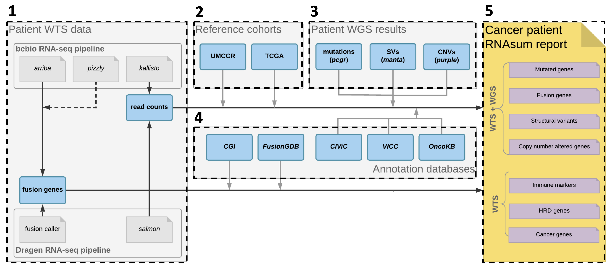

The RNAsum workflow is comprised of five main steps
shown below.

1. Data collection
Read counts data from the patient are collected from the DRAGEN RNA or bcbio-nextgen RNA-seq pipeline.
2. Data processing
Counts processing
The read count data (e.g. abundance.tsv or quant.sf quantification files from kallisto or salmon, respectively) are processed according to the steps illustrated and described below.
Figure 1
Counts processing scheme.
Data collection - Fig1A
- Load read count files from the following three sets of data:
- patient sample
- external reference cohort
- UMCCR internal reference set of in-house pancreatic cancer samples
Filtering (optional) - Fig1C
- Filter out genes with low counts (CPM or TPM < 1
in more than 90% of samples) in:
- sample + internal reference set
- external reference set
Normalisation (optional) - Fig1D
- Normalise data for sample-specific effects in:
- sample + internal reference set
- external reference set
Combination - Fig1E
- Subset datasets to include common genes
- Combine sample + internal reference set with external reference set
Batch-effects correction (optional) - Fig1F
- Consider the patient sample + internal reference (regardless of the patient sample origin) as one batch (both sets processed with the same pipeline) and corresponding TCGA dataset as another batch. The objective is to remove data variation due to technical factors.
Data scaling
The processed count data is scaled to facilitate interpretation of the expression values. The data is either scaled: - gene-wise (Z-score transformation, default) or - group-wise (centering).
Gene-wise
Z-scores are comparable by measuring the observations in multiples of the standard deviation of the given sample. The gene-wise Z-score transformation procedure is illustrated and described below.
Figure 2
Gene-wise Z-score transformation scheme.
- Extract expression values across all samples for a given gene (Fig2A)
- Compute Z-scores for individual samples (see equation in Fig2B)
- Compute median Z-scores (Fig2C)
for:
- internal reference set*
- external reference set
- Present patient sample Z-score in the context of the reference cohorts’ median Z-scores (Fig2D).
* used only for pancreatic cancer patients
Group-wise
The group-wise centering apporach is illustrated and described below.
Figure 3
Group-wise centering scheme.

- Extract expression values (Fig3A) for:
- patient sample
- internal reference set*
- external reference set
- For each gene compute median expression value
(Fig3B) in:
- internal reference set*
- external reference set
- Center the median expression values for each gene in individual groups (Fig3C).
- Present patient sample centered expression values in the context the reference cohorts’ centered values (Fig3D).
* used only for pancreatic cancer patients
3. Integration with WGS-based results
For patients with available WGS data processed using the umccrise pipeline, the expression level information for mutated genes or genes located within detected SVs/CNVs, as well as the genome-based findings, are incorporated and used as primary source for expression profile prioritisation.
Somatic SNVs and small indels
- Check if the PCGR tiered TSV output file is available (e.g. ).
-
Extract expression level information and
genome-based findings for genes with detected genomic variants (use
--pcgr_tierargument to define tier threshold value). - Order genes by increasing variant tier and then by decreasing absolute values representing difference between expression levels in the patient sample and the corresponding reference cohort.
Structural variants
- Check if the Manta annotated TSV output file is available (e.g. example input).
- Extract expression level information and genome-based findings for genes located within detected SVs
- Order genes by increasing SV score and then by decreasing absolute values representing difference between expression levels in the patient sample and the corresponding reference cohort.
- Compare gene fusions detected in WTS data (arriba and pizzly) and WGS data (Manta)
- Prioritise WGS-supported gene fusions.
Somatic CNVs
- Check if the PURPLE output file is available (e.g. example input).
-
Extract expression level
information and genome-based findings for genes located
within detected CNVs (use
--cn_lossand--cn_gainarguments to define CN threshold values to classify genes within lost and gained regions). - Order genes by increasing (for genes within lost regions) or decreasing (for genes within gained regions) Copy Number and then by decreasing absolute values representing difference between expression levels in the patient sample and the corresponding reference cohort.
4. Results annotation
WTS- and/or WGS-based results for the altered genes are collated with knowledge derived from in-house resources and public databases (listed below), to provide additional sources of evidence for their significance, e.g. to flag variants with clinical significance or potential druggable targets.
Key cancer genes
The UMCCR cancer gene panel builds off from several sources:
- Cancermine with at least 2 publications with at least 3 citations
- NCG known cancer genes
- Tier 1 COSMIC Cancer Gene Census (CGC)
- CACAO hotspot genes (curated from ClinVar, CiViC, and Cancer Hotspots)
- At least 2 matches in the following 5 sources and 8 clinical panels:
- Cancer predisposition genes (CPSR list)
- COSMIC Cancer Gene Census (tier 2)
- AstraZeneca 300 (AZ300)
- Familial Cancer
- OncoKB annotated
- MSKC-IMPACT
- MSKC-Heme
- PMCC-CCP
- Illumina-TS500
- TEMPUS
- Foundation One
- Foundation Heme
- Vogelstein
- Used for extracting expression levels of cancer genes (presented in
the
Cancer genesreport section) - Used to prioritise candidate fusion genes
OncoKB
-
OncoKB gene list is
used to annotate altered genes across various sections in the report
(annotations and URL links in
External resourcescolumn in reportSummary tables).
VICC
-
Variant Interpretation for
Cancer Consortium (VICC) knowledgebase is used to annotate altered
genes across various sections in the report (annotations and URL links
in
External resourcescolumn in reportSummary tables).
CIViC
- The Clinical Interpretation of
Variants in Cancer (CIViC) database is used to annotate altered
genes across various sections in the report (annotations and URL links
in
External resourcescolumn in reportSummary tables). - Used to flag clinically actionable aberrations in the
Drug matchingreport section.
CGI
- The Cancer Genome Interpreter (CGI) database is used to flag genes known to be involved in gene fusions and to prioritise candidate fusion genes.
FusionGDB
- FusionGDB database is used to flag genes known to be involved in gene fusions and to prioritise candidate gene fusions.